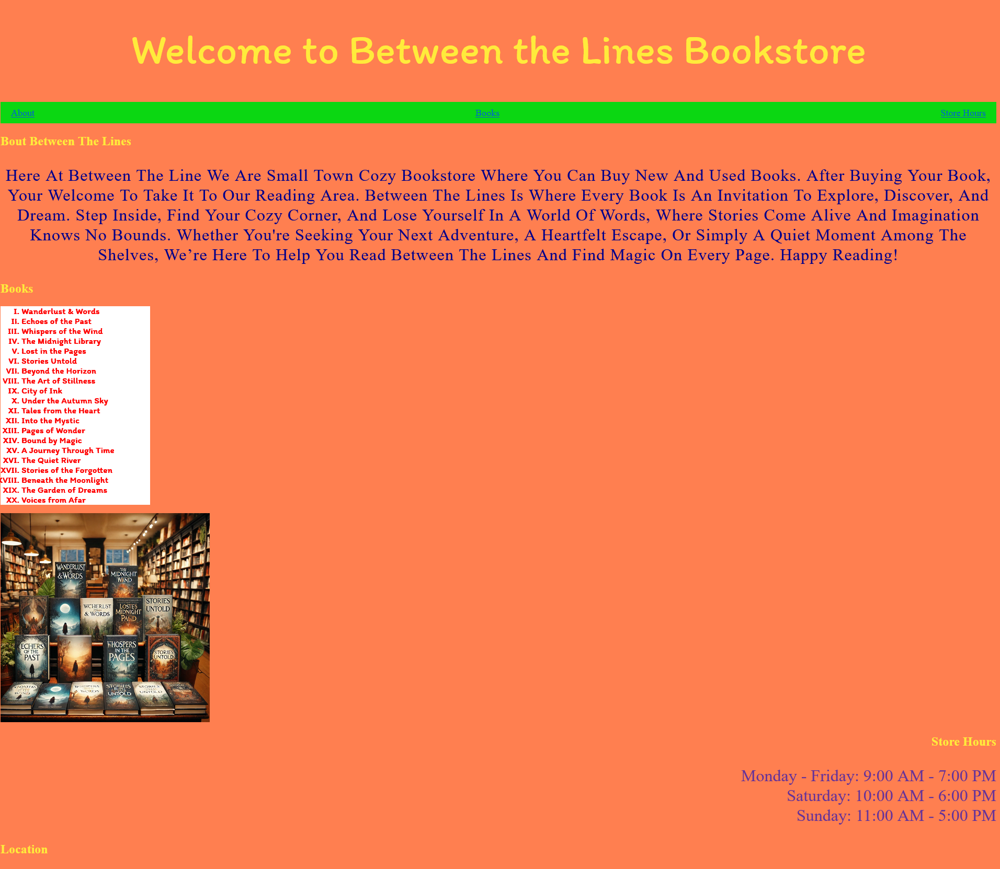
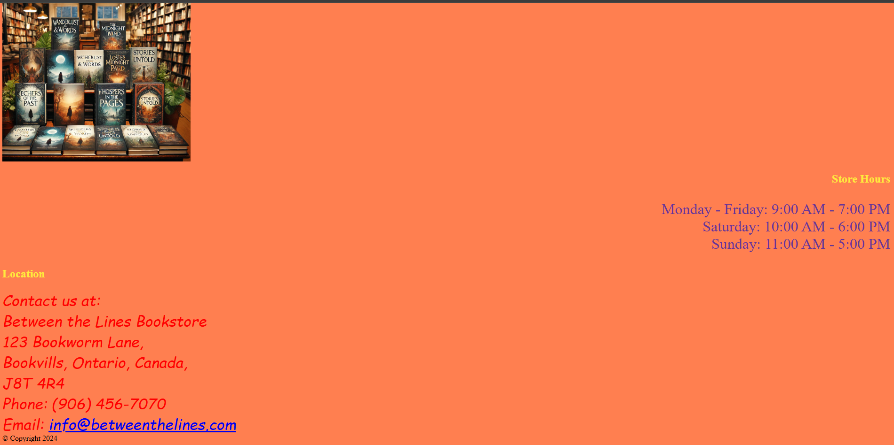
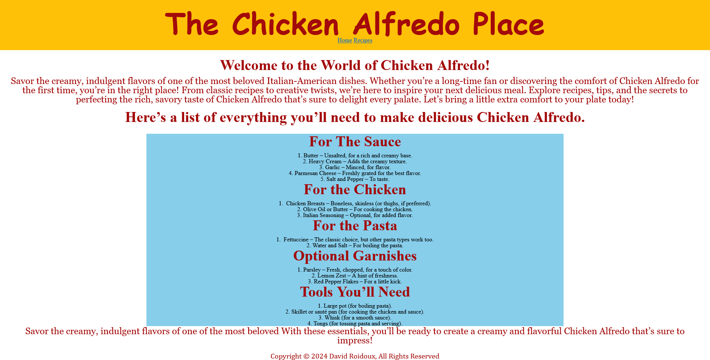
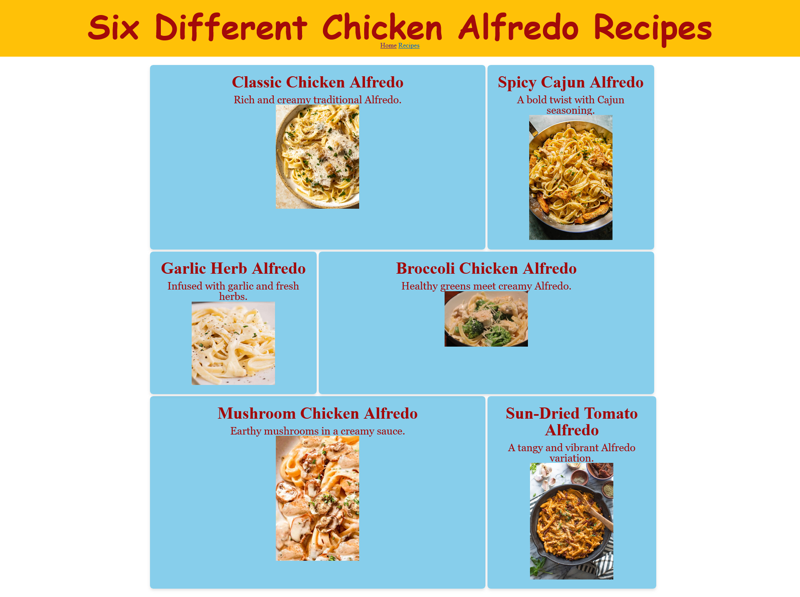
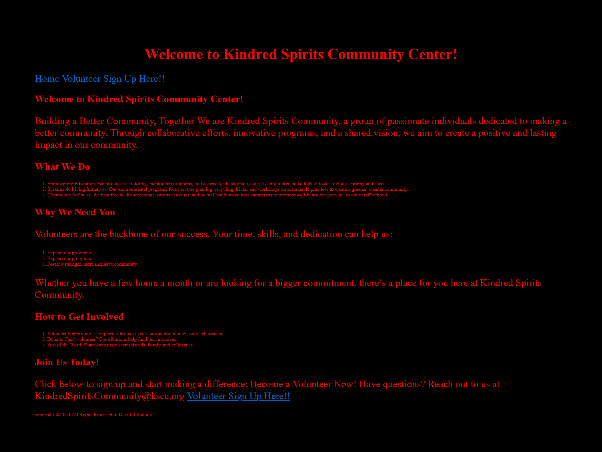
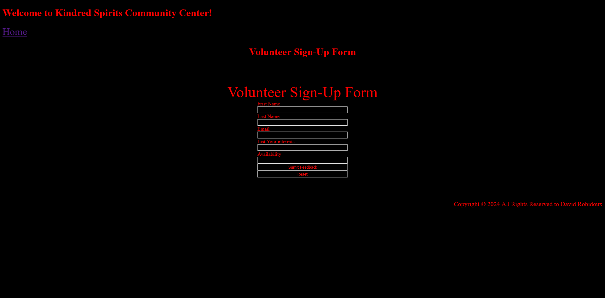
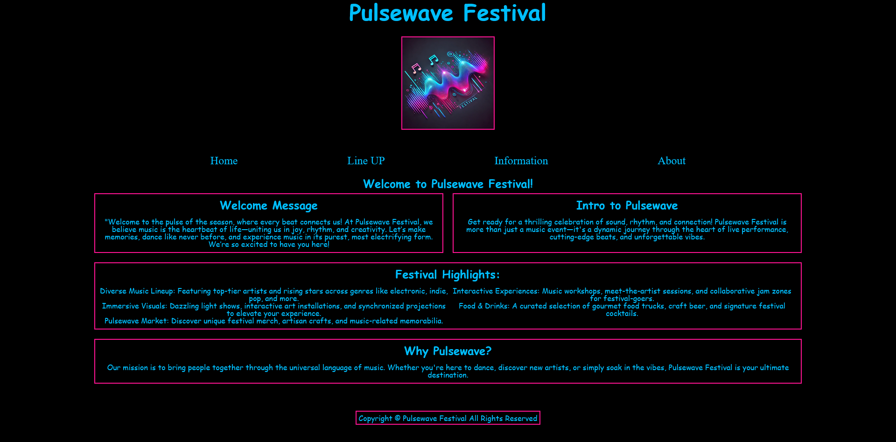
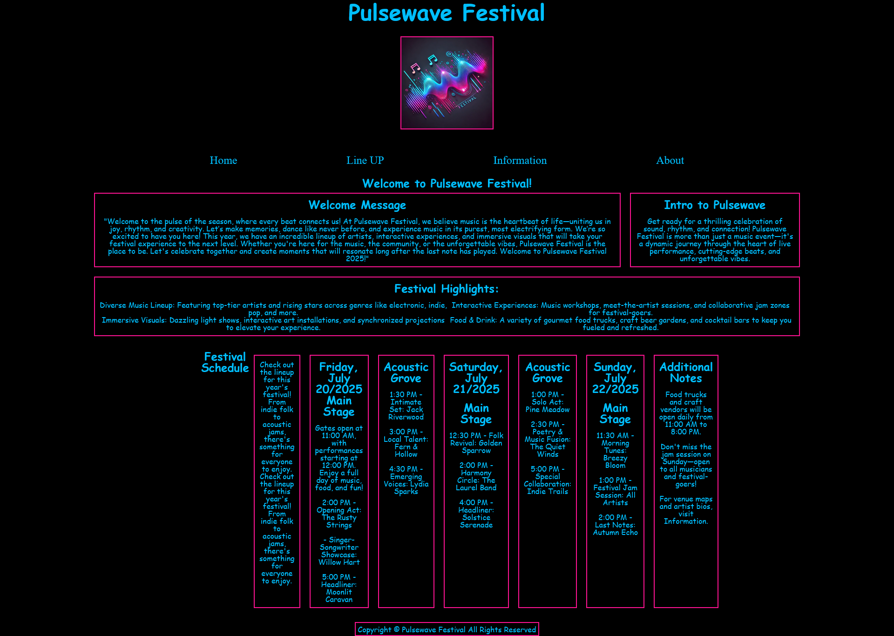
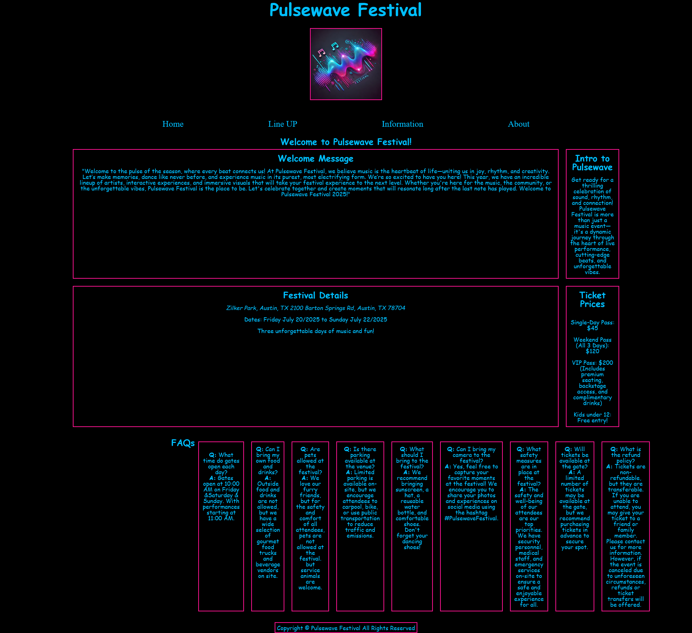
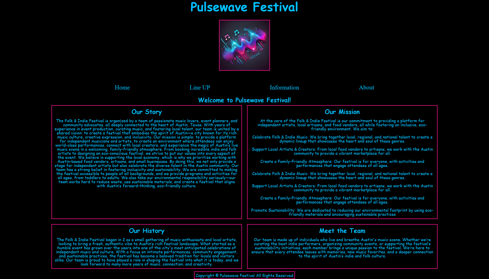

Explore My Creative Portfolio
Welcome to my works page! Here you'll find a showcase of my creative
projects, including mock websites and design concepts. Each project
reflects my passion for web design and development, as well as my
commitment to quality and innovation. Take a look around and discover
the possibilities of digital creativity! Each project is a testament
to my dedication to pushing the boundaries of web design. From sleek,
modern interfaces to user-friendly navigation, my work is designed to
provide an exceptional user experience. I believe in the power of
visual storytelling and strive to create websites that are not only
functional but also visually captivating. Browse through my portfolio
to see the diversity and creativity that I bring to every project.
Between The Lines Bookstore
Dive into the world of literature with our mock bookstore website.
Featuring a wide selection of genres, authors, and bestsellers, this
platform is your gateway to endless reading adventures. Explore new
releases, discover hidden gems, and connect with fellow book lovers
through our online community. Whether you're a casual reader or a
bookworm, this is your haven for all things literary!


Joystick Junction Gaming Blog
Step into a world where gaming nostalgia meets modern passion.
Joystick Junction celebrates the golden age of Nintendo, featuring
reviews, retrospectives, and hidden gems from the classics you love.
From Mario’s first jump to Zelda’s timeless adventures, this is your
hub for all things original Nintendo. Power up your memories and join
the conversation!
Indigenous Artists Showcase
Celebrating Indigenous Creativity: An Artists Showcase Discover the
vibrant world of Indigenous artistry through our showcase website.
Featuring talented artists from diverse communities, this platform
highlights their unique stories, traditions, and creative expressions.
Explore stunning artworks, learn about the featured artists, and
connect with the rich cultural heritage they bring to life. Experience
the beauty and depth of Indigenous art in every piece
Mountain Biking Adventures
Mountain Biking Adventures: Ride the Trails of a Lifetime Gear up for
adrenaline-pumping experiences with our mock Mountain Biking
Adventures website. Explore scenic trails, expert tips, and
adventure-packed destinations tailored for thrill-seekers of all skill
levels. Whether you're chasing rugged terrain or breathtaking views,
this is your ultimate hub for all things mountain biking. Let the
journey begin
The Chicken Alredo Places!!
This is a mock website for a chicken alfredo place. It is a simple
website that has a home page, a menu page, and a contact page. The
home page has a picture of diffent Chocken Alredo. The menu page has a
list of all the items on the menu, The contact page has a form where
customers can submit their name, email, and message. The website is
designed to be clean and easy to navigate, with a focus on the food.


Kindred Spirits Communtiy Centers
This is a mock website for a community center. It is a simple website
that has a home page, a programs page, and a contact page. The home
page has a picture of the community center, The programs page has a
list of all the programs offered, The contact page has a form where
people can submit their name, email, and message. The website is
designed to be clean and easy to navigate, with a focus on the
community.


Pulsewave Festival
"Welcome to the pulse of the season, where every beat connects us!
At Pulsewave Festival, we believe music is the heartbeat of
life—uniting us in joy, rhythm, and creativity. Join us for a
weekend of electrifying performances, immersive experiences, and
unforgettable memories. From the main stage to the silent disco, the
pulse of the festival is yours to discover. Let the music move you,
the energy ignite you, and the connections inspire you. Welcome to
Pulsewave Festival, where the beat goes on!"



